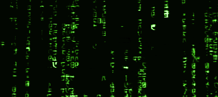

Inhoud PC Technieken
Dit is de homepagina van het vak PC Technieken.

Alles is moeilijk, voor het makkelijk wordt.
Suzanne Anitaens
Inhoud van de opdracht over noopener en noreferrer?
Inhoud van de opdracht over speciale tekens invoegen?
Les 1
Oefening 1
Oefening 2
Les 2
Marketing op je webpagina
Oefening 1 beveiligen van je links-blank-
Oefening 2 speciale symbolen